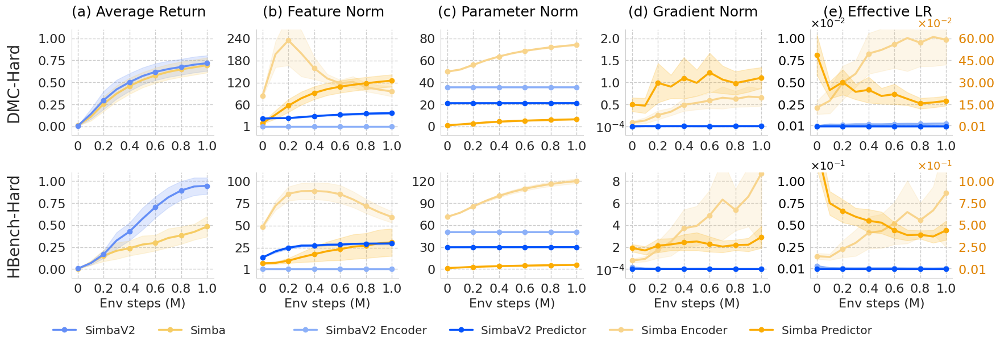
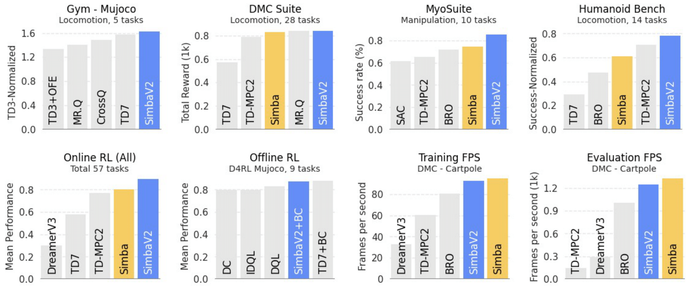

TL;DR
Stop worrying about algorithms, just change the network architecture to SimbaV2
Abstract
Scaling up the model size and computation has brought consistent performance improvements in supervised learning. However, this lesson often fails to apply to reinforcement learning (RL) because training the model on non-stationary data easily leads to overfitting and unstable optimization. In response, we introduce SimbaV2, a novel RL architecture designed to stabilize optimization by (i) constraining the growth of weight and feature norm by hyperspherical normalization; and (ii) using a distributional value estimation with reward scaling to maintain stable gradients under varying reward magnitudes. Using the soft actor-critic as a base algorithm, SimbaV2 scales up effectively with larger models and greater compute, achieving state-of-the-art performance on $57$ continuous control tasks across $4$ domains.
Scaling Network Size & UTD Ratio
Empiricial Analysis: Training Stability

Benchmark Summary

Paper
SimbaV2: Hyperspherical Normalization for Scalable Deep Reinforcement Learning
Hojoon Lee*, Youngdo Lee*, Takuma Seno, Donghu Kim, Peter Stone, Jaegul Choo
arXiv preprint
Citation
If you find our work useful, please consider citing the paper as follows:
@article{lee2025simbav2,
title={Hyperspherical Normalization for Scalable Deep Reinforcement Learning},
author={Hojoon Lee and Youngdo Lee and Takuma Seno and Donghu Kim and Peter Stone and Jaegul Choo},
journal={arXiv preprint arXiv:2502.15280},
year={2025},
}